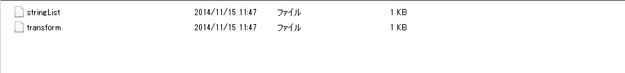

Easy Save2 を使ってみる
はじめに
Unityではデータの保存にPlayerPrefsを使うことはできるけど、int, float, stringしか保存できないので、簡単な用途にしか使えない。
データの保存を簡単にできるアセットに Easy Save2 がある。
これをセールで安かったため、購入し使ってみることにした。
対応しているプラットフォーム
PC、Mac、Web、Linux、iOS、Android、Windows Phone 8、Windows Store となっており、ひと通り動くようだ。
Webプレイヤーはデータの保存容量に1MBの制限があるみたい。
対応している型
Supported Typesを見れば一目瞭然。
ListやDictionaryなどのコレクション系はもちろん、VectorとかTransofrmもいけるらしい。
実際にセーブ・ロードする
特に難しいこともなく、PlayerPrefsを使う感覚と同じ感じ。リストとtransformのセーブとロードはこんな感じ。
//リストのセーブ.
List<string> strs = new List<string>();
strs.Add("abc");
strs.Add("def");
ES2.Save(strs, "stringList");
//リストのロード.
List<string> loadStrings = ES2.LoadList<string>("stringList");
//transformのセーブ.
transform.position = new Vector3(0.5f, 1f, 2f);
ES2.Save(transform, "transform");
//transformのロード.
Transform t = ES2.Load<Transform>("transform");
保存場所
Application.persistentDataPathがデフォルトの保存場所のようだ。
Windowsだと C:\Users\xxxx\AppData\LocalLow{Company Name}{Product Name} 。
Company Name と Product Name は Player Settings の項目にあるやつ。
もちろん、保存場所を変更することができ、ビルドしてできたexeファイルと同じ場所に保存することも可能。
iOSやAndroidの保存場所は下記が参考になる。
【Unity3D】ファイル保存パス
データファイル
保存場所を開くと、前述で試したファイルが存在しているのがわかる。

keyごとにファイルが生成されているが、タグという機能を使うと1つのファイルにまとめることができる。
ES2.Save(strs, "someFile?tag=stringList");
ES2.Save(transform, "someFile?tag=transform");
こうすると、someFile というファイルだけが生成される。
暗号化
ファイルの暗号化にも対応している。こんな感じ。
ES2.Save(strs, "stringList?encrypt=true&password=test");
loadStrings = ES2.LoadList<string>("stringList?encrypt=true&password=test");
loadStrings = ES2.LoadList<string>("stringList"); //エラー.
毎回、設定するのが面倒な場合は、デフォルト設定で暗号化をONにすれば良い。
Projectのところで右クリックすると、Easy Save2 用のメニューが追加されているので、「Add Default Settings Object to Scene」 を選択すればデフォルト設定ができる。
ざっと紹介したけど、紹介したことは全部Easy Save 2 Documentationに載っているので、最新の情報や詳しいことはそちらを参照してほしい。
応用
Easy Save2 で シリアライズされたクラスを保存する
確認バージョン
Unity 4.6